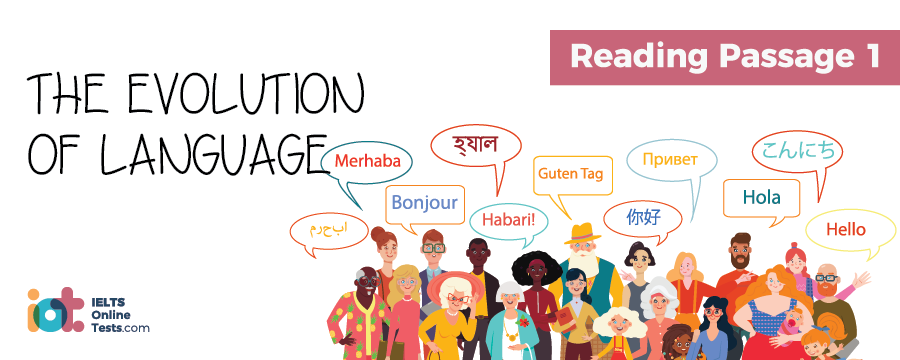

Part 1
READING PASSAGE 1
You should spend about 20 minutes on Questions 1-13, which are based on Reading Passage 1 below.

THE EVOLUTION OF LANGUAGE
A. Language everywhere changes over time; it has to. A central reason that necessitates modification is to allow for developments in our world to be expressed. For example, the technological revolution alone has been responsible for the addition of a plethora of words to our vocabulary: hard drive, software, modem to name just a few. The Japanese writing script katakana, which was originally introduced in the 9th century as a means by which Buddhist monks could correctly interpret Chinese pronunciations, is now most commonly used to embrace foreign words for which there is no original Japanese character; pizza or hamburger for example. Likewise the western world’s exposure to and familiarity with foreign cultures now means that words such as sushi, nam bread and kebab, for example, are used by diners on a regular basis.
B. However, expansion of our vocabulary is just one element involved in how and why language evolves. Given the variation of dialects or regional accents present in most language systems, it is clear that an individual’s interpretation of what is actually correct and commonly used will vary quite dramatically, since this perception is based upon a combination of factors including the age, educational level and region of the country a person is from. As we go about our daily lives and interact with others from different backgrounds and experiences, the language we hear is often taken on board and incorporated into the way in which we communicate ourselves. Many phrases with American origins are now commonplace in British English for example, due to the frequency with which they are heard on television and in the movies.
C. Changes in language are often driven by the young and many such changes are commonly considered by older people to be a disintegration of standards rather than an evolution and an improvement. Let’s consider an Americanism commonly used by youngsters in all pans of the English speaking world. Used as an alternative to “Tom said…” it is now commonplace to hear “Tom goes, the pay rise was unacceptable.” or, “Tom was all, the pay rise was unacceptable.”; much to the horror of many traditionalists. However, this modification could also be considered to be adding to and not detracting from our ability to communicate effectively. To illustrate, let’s consider the original phrase “Tom said”; it is used solely to show’ the listener that we are reporting the words of Tom, while the modern variation, “Tom goes” has literally the same meaning. However, if the speaker chooses instead to use the latter phrase, “Tom was all”, they are also able to convey the message that Tom had an emotional reaction to the situation they are reporting, therefore a much more effective method of communicating information has been created, some may say. However, should the now’ commonly used texting abbreviations such as ‘gr8t’ (great) and ‘l8r’ (later) become permanent replacements of the original words, it is likely that even the most liberal amongst us would be horrified.
D. Variations on language are usually more readily accepted into informal language prior to them being absorbed for use in formal writing. Examples of words that we now commonly use, but were once considered incorrect, are ‘pea’ and ‘hopefully’. Let’s take pea; it derived from the word ‘pease’, which being an uncountable noun has the same form regardless of whether one or more pease were being spoken about. However, this was commonly overlooked and misunderstood, and through error the singular form of the vegetable became ‘pea’. More recently ‘hopefully’ was considered by many to be an inappropriate alternative to ‘I hope’; at best only accepted in informal use. The word hopefully is now’ fully acceptable in both informal speech and formal writing.
E. Some people believe that traditional usages of language are always more superior and refined than modern variations even when the reasons behind the rule were dubious in the first place. For example, it was once seriously frowned upon to split an infinitive in a sentence and even today it is considered grammatically incorrect to do so. To demonstrate, let’s consider the following sentence: ‘The examiner asked me to quietly leave the room’; this was considered incorrect as the word ‘quietly’ splits the infinitive of the verb ‘to leave’. The origins of this rule hail back to the 17th century when scholars believed that the English language should be adapted to follow the rules of Latin; then considered the perfect language. Since splitting infinitives in Latin is impossible, it was decided that splitting infinitives in English, even though possible, was not acceptable, Given that initial motivations behind the rule were questionable and the clarity of meaning of the sentence is not compromised in the ‘incorrect’ form, it could be argued that this grammar rule is a prime example of an unnecessary sanction which is likely to be abandoned in the future.
F. As language evolves, changes in grammar structures which would result in confusion of the actual meaning of the sentences are unlikely; however, the meanings of words are often modified or altered beyond recognition by different generations and can be easily misinterpreted by other social groups. Take, for example, the modern version of the word ‘bad’ meaning ‘great’ when used in contemporary slang. Many slang words remain dated in the era in which they are developed, for example words like ‘to beef, meaning to complain (introduced in the 1920’s) are not only dated but may not even be understood in a modern context, while others such as ‘guy’ become absorbed into mainstream language. Who knows what future generations will add to the ever changing environment of communication?
Part 2
READING PASSAGE 2
You should spend about 20 minutes on Questions 14-26, which are based on Reading Passage 2 below.

WATER HYACINTH: BEAUTIFUL YET DESTRUCTIVE
A. Despite possessing vibrant purple flowers and being attractive to the eye, the water hyacinth has often been referred to as the most problematic aquatic plant in the world’s waters. Due to its aesthetic appeal, water hyacinth, which is native to South America, has been distributed to many different regions and now thrives in the southern states of the USA and many subtropical and tropical locations. It has also been observed to be relatively tolerant of cooler climates and is routinely sold as an ornamental plant for domestic use in a number of horticulture centres.
B. Though the hyacinth species is distinctive in appearance, another aquatic floating plant – water lettuce – is sometimes mistakenly identified as water hyacinth. Water lettuce, however, does not have the same attractive flowers, has larger leaves and is less tolerant of cooler climates. Water hyacinth has rounded waxy, green leaves which grow up to around 6 inches in width and floating leaf stems which grow up to 12 inches in length. Flowers are typically between 2 to 3 inches in width and as many as 15 flowers, each purple on the outside and containing a yellow centre, may grow from each plant.
C. Many of the problems associated with the water hyacinth are due to its incredible growth and reproduction capabilities, which have made it difficult to control and allow it to quickly dominate the environment in which it grows and spreads. Its growth patterns are characterised by a rapid formation of an impenetrable vegetation mass; botanists say that one plant can produce around 5000 seeds and in one study two plants were observed to produce 1200 plants in as little as 4 months. Following nature’s usual pattern, water hyacinth seeds are distributed outside of the immediate area by birds, fauna, wind and water currents, facilitating growth in surrounding areas previously free of the plant.
D. Domination of environments by water hyacinth populations has a number of negative implications. For humans, difficulties may be faced in getting boats through areas of rivers and lakes where the plant is present and fishing and swimming opportunities may be limited. However, the implications for the ecosystem of the immediate environment may be of even greater concern. The density of the mass of water hyacinth populations can prevent adequate amounts of sunlight and oxygen reaching the water: as a result, significant numbers of fish may die, other species of plant growing below water level are compromised and the ecosystem of the immediate area can therefore become unbalanced. Furthermore, the conditions created by the presence of water hyacinth, while detrimental to most forms of life, are perfect for encouraging growth of deadly bacteria often found in poorly oxygenated areas of water.
E. In the southern states of the USA, in Florida in particular, water hyacinth is now under maintenance control. The plant population can be limited in a number of ways: including use of herbicides, clearance equipment and bio-control insects. However, efforts to minimise the population of water hyacinth need to be continual and consistent; experts warning that unless control methods are upheld, the problem can easily reoccur. Some say inattention for as little as a twelve month period would allow numbers to quickly return to infestation level; hardly surprising given that the species is known to be able to double in as little as 12 days.
F. Water hyacinth is thought to have been introduced into Africa in the 1800s; its presence at Lake Kyoga was first identified in 1988 and at Lake Victoria in 1989. In the mid 1990s, water hyacinth was estimated to dominate 10% of the latter lake’s waters. However, by 1998, the plant was almost completely eliminated from East African waters; this being achieved predominantly by the use of bio-control insects, in this case snout beetles, a type of weevil which feeds only on the water hyacinth species of plant. Tens of thousands of the weevils were distributed throughout the lake areas of East Africa, their habit of feeding on the leaves and laying their eggs in the plants’ stalks eventually causing the plants to die and sink to the bottom of the lake. In addition, the plant population was removed using mechanical clearing equipment and by hand with the help of a machete.
G. Despite earlier success, however, negative repercussions of human activity have caused the return of water hyacinth to East African waters. Uganda’s Lake Kyoga, has recently once again experienced problems with infestation. Sewage and agricultural waste making their way into the waterways and thereby creating an excess of nutrients in the water have been the main contributing factors to the re-emergence of water hyacinth. In addition, high levels of nitrogen in rainfall, which enters the water cycle from the smoke created by wood burning cooking fires used in the region, also serves as nutrition to the increasing plant population. Restriction of human activity on lakes such as this, caused by the infestation of water hyacinth has enormous implications; villages such as Kayago, which is in close proximity to the lake, are often almost completely dependent on fishing activity for their economy and food source.
H. While the infestation of water hyacinth in Lake Victoria at the time of writing stands at 0.5%, far below the 10% level experienced in the middle of the 1990s, experts fear that growth could once again become out of control. The main concern is that, as a result of changing weather conditions, the activity of the snout beetle weevils may be less effective than in the past. The region around Lake Victoria has experienced an extended period of drought and while the water hyacinth is capable of living and reproducing both in lakes and surrounding dry land, its predator, the snout beetle can only survive on water. Plant populations growing in lakeside locations are therefore under limited threat from the insect brought in to control them and are consequently able to reproduce in relative freedom.
Part 3
READING PASSAGE 3
You should spend about 20 minutes on Questions 27-40, which are based on Reading Passage 3 below.
PSYCHOMETRICS
A. Psychometrics involves psychological and educational assessment of the subject by way of measuring attitudes, personality, abilities and knowledge. The field has two primary focuses; the creation of measurement instruments and procedures and development and enhancement of existing methodology employed.
B. The concept of psychometric testing, introduced long before the establishment of IQ testing and other current methodologies, was first explored by Francis Galton who developed the first testing procedures supposedly related to intelligence; however, his measurement tools were in fact based upon physical and physiological benchmarks rather than testing of the mind itself. Measurements included the physical power, height and weight of subjects which were recorded and results used to estimate the intelligence of subjects. While the approach was not successful, the studies conducted by Galton were to influence the work of future researchers. Approaches to measurement of intelligence, which is defined as the mind’s relative ability to reason, think, conceptually plan, solve problems, understand and learn, were later developed by pioneers such as Charles Spearman. Significant contributions to its early development were also made by Wilhelm Wundt, L.L. Thurstone, Ernst Heinrich Weber and Gustav Fechner.
C. The most well-known traditional approach to development of psychometric instruments to measure intelligence is the Stanford-Binet IQ test, originally developed by French psychologist Alfred Binet. Researchers define intelligence as separate to other attributes such as personality, character, creativity and even knowledge and wisdom for the purpose of their assessment. Intelligence testing methods are not intended to determine a level of genetic intelligence separate from and unaffected by the environment to which the individual has been exposed to in life; rather to measure the intelligence of an individual apparent as a result of both nature and nurture. Psychometrics is today a useful and widely used tool used for measurement of abilities in academic areas such as reading, writing and mathematics.
D. IQ tests are commonly used to test intelligence, though some believe that this testing is unfair and not truly representative of the subject’s intellect as individuals may excel in different areas of reasoning. Psychologist Howard Gardner, working on this assumption, introduced the concept of an individual cognitive profile in 1983 in his book Frames of Mind: The Theory of Multiple Intelligences. He holds that one child may perform excellently in one aspect, yet fail in another and that their overall performance in a number of intellectual areas should be considered. Gardner first identified seven different types of intelligence, these being; linguistic, logical-mathematical, spatial, bodily- kinesthetic, musical, interpersonal and intrapersonal. In 1999 after further research he added an 8th element to the equation; naturalistic intelligence, and at the time of writing is investigating the possibility of a 9th; this being existential intelligence.
E. The first intelligence as defined by Gardner in the Theory of Multiple Intelligences, linguistic intelligence, relates to an individual’s ability to process and communicate written and spoken words. Such people are said to excel at reading, writing, story-telling, learning a foreign language and the memorising of words and dates. The logical-mathematical category is related to a person’s ability to reason logically, think scientifically, make deductions and perform well in mathematic calculations. Spatial intelligence is related to vision and spatial judgement; such individuals have been observed to have a strong visual memory and the potential to excel in artistic subjects. Those exhibiting a leaning towards the third classification, bodily-kinesthetic intelligence, often learn best by physically practising an action rather than by reading or seeing.
F. Musical intelligence, as the name suggests, relates to ability in defining differences in rhythm and tones; individuals possessing musical intelligence are often able to sing, play musical instruments and compose music to a high standard. Since a high level of audio-related ability exists, many in this category are said to learn well in a lecture situation where they are required to listen attentively to information. Interpersonal intelligence relates to an individual’s ability to communicate and empathise with others; typically extrovert, they learn well through discussion, debate and interaction with others. The last of the 7 original categories identified by Gardner, intrapersonal intelligence, fits the opposite description of interpersonal intelligence; such individuals working best independently. According to Gardner they are capable of high levels of self reflection and are often perfectionists.
G. A number of psychometric experts, however, oppose Gardner’s view’s and have reservations about the validity of his theories. Firstly, some detractors disagree with the overall definition of intelligence used in Gardner’s theory. They hold that, in fact, some categories such as interpersonal or intrapersonal intelligence relate more to personality that cognitive performance. The more recently identified naturalistic intelligence, which relates to an affinity to the natural world and an ability to nurture and cultivate, has been dismissed completely by many as no more than a hobby. Doubts have been raised that others, such as musical intelligence, are in reality talents. A final criticism attached to the theory is that some believe that the intelligences cannot be treated as separate entities as some individuals may perform equally well in what could be considered diverse areas; linguistic and logical-mathematical for example. Gardner however maintains that his theories are sound, since an identifiable and separate part of the brain is responsible for controlling aspects related to each of the different types of intelligence.
H. Despite the criticism received from some of his contemporaries, Gardner’s theories are well respected and often applied in the world of education as a tool for identifying children’s differing abilities and potential career paths. For Instance, those showing linguistic capabilities are said to be ideal in roles including writing, politics and teaching; logical mathematical thinkers suited to careers in science, mathematics, law, medicine and philosophy. Those exhibiting spatial intelligence are said to be suited to a career such as art, engineering or architecture; while individuals with a leaning towards bodily- kinesthetic intelligence may excel in areas such as athletics, dancing or craft-making. Strengths in the area of musical intelligence are said to often lead to success as a singer, conductor or musician. Those displaying strong interpersonal skills have been recognised as often making effective politicians, managers, diplomats and social workers; while those showing a dominant intrapersonal intelligence are said to be better suited to professions involving more self reflection and lower levels of interaction with the outside world such as writing, philosophy or theology.
Part 1
Questions 1-4
Reading Passage 1 has six paragraphs A-F.
Choose the correct heading for paragraphs B, C, E and F from the list of headings below.
Write the correct number i-viii in boxes 1-4 on your answer sheet.
| List of Headings | ||
| i. | Historical acceptance of change | |
| ii. | The Generation Gap | |
| iii. | Influences on speech | |
| iv. | Ancient writing in Asia | |
| v. | Cultural evolution and its impact on language | |
| vi. | Slang expected in the future | |
| vii. | Questioning logic | |
| viii. | Lifespan of vocabulary | |
Example: Paragraph A; Answer: v
1.
2.
Example: Paragraph D; Answer: i
3.
4.
Questions 5-10
Do the following statements reflect the claims of the writer in Reading Passage 1? Write:
| YES. | if the statement agrees with the views of the writer | |
| NO. | if the statement contradicts the views of the writer | |
| NOT GIVEN. | if it is impossible to say what the writer thinks about this |
Write the correct answer YES, NO or NOT GIVEN in boxes 5-10 on your answer sheet.
5.
6.
7.
8.
9.
10.
Questions 11-13
Complete the summary of paragraphs E and F with the list of words A-H below.
Write the correct letter A-H in boxes 11-13 on your answer sheet.
Some grammar rules such as avoiding 11.
It is likely, however, since they do not impact on the 12.
| A. | Slang | |
| B. | Split infinitives | |
| C. | Grammatically incorrect | |
| D. | Meaning | |
| E. | Recognition | |
| F. | Disregarded | |
| G. | Misinterpreted | |
| H. | Confusion |
Part 2
Questions 14-18
Reading Passage 2 has eight sections A-H.
Which paragraph contains the following information?
Write the correct answer A-H in boxes 14-18 on your answer sheet.
14.
15.
16.
17.
18.
Questions 19-23
Classify the following features as characteristics of
| A. | Water hyacinth | |
| B. | Water lettuce | |
| C. | Both water hyacinth and water lettuce | |
| D. | Neither water hyacinth or water lettuce |
Write the correct letter A, B, C or D in boxes 19-23 on your answer sheet.
19.
20.
21.
22.
23.
Questions 24-26
Do the following statements agree with the information given in reading passage 2?
In boxes 24 – 26 on your answer sheet write:
| TRUE. | if the statement agrees with the information | |
| FALSE. | if the statement contradicts the information | |
| NOT GIVEN. | If there is no information on this |
24.
25.
26.
Part 3
Questions 27–31
Reading Passage 3 has eight paragraphs A-H. Which paragraph contains the following information?
Write the correct letter A-H in boxes 27-31 on your answer sheet.
NB. You may use any letter more than once.
27.
28.
29.
30.
31.
Questions 32-37
Do the following statements agree with the information given in Reading Passage 3?
In boxes 32-37 on your answer sheet write
| TRUE. | if the statement agrees with the information | |
| FALSE. | if the statement contradicts the information | |
| NOT GIVEN. | If there is no information on this |
32.
33.
34.
35.
36.
37.
Questions 38-40
Choose the correct letter A, B, C, or D.
Write your answers in boxes 38-40 on your answer sheet.